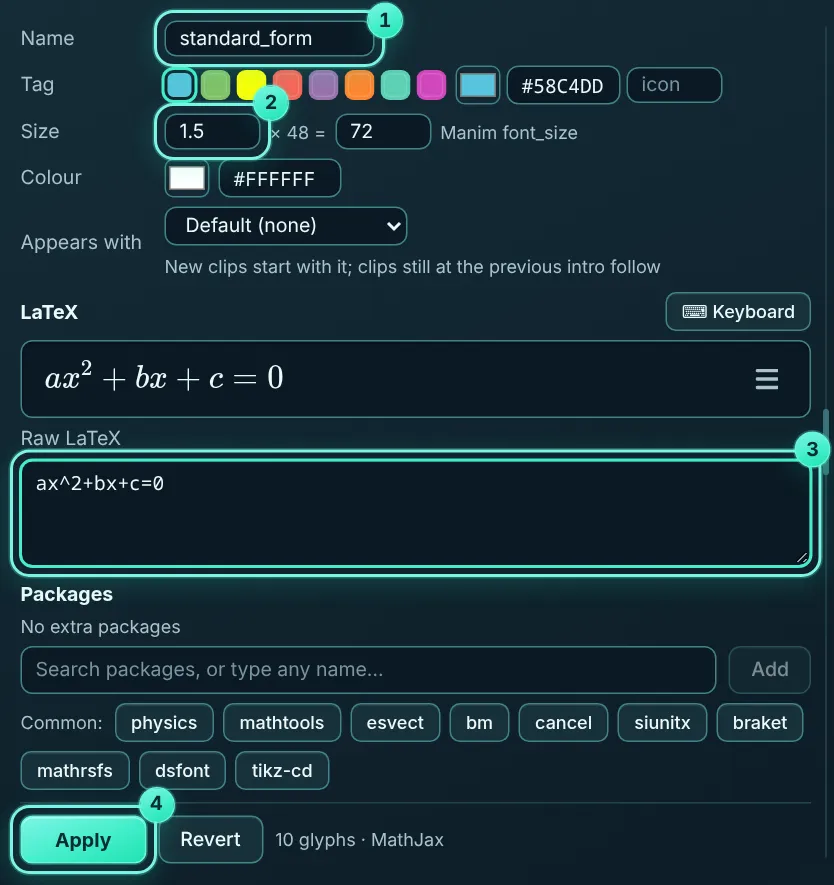
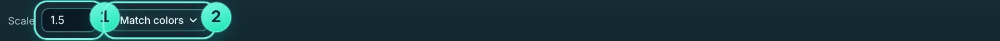
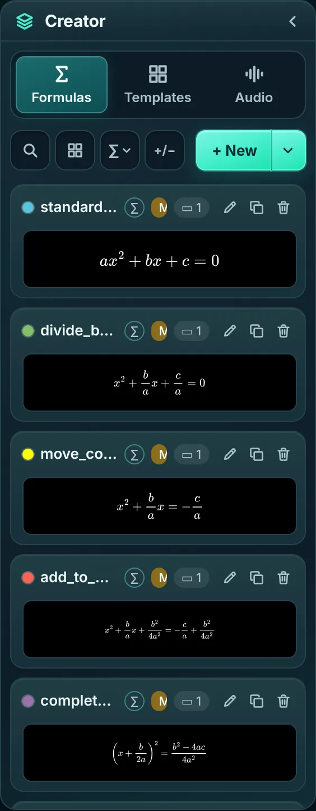
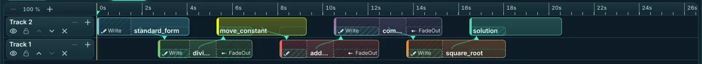
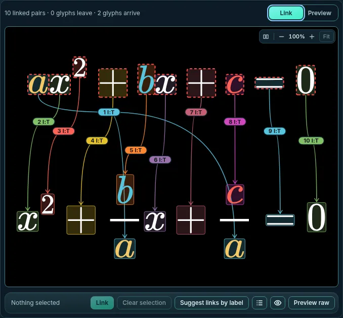
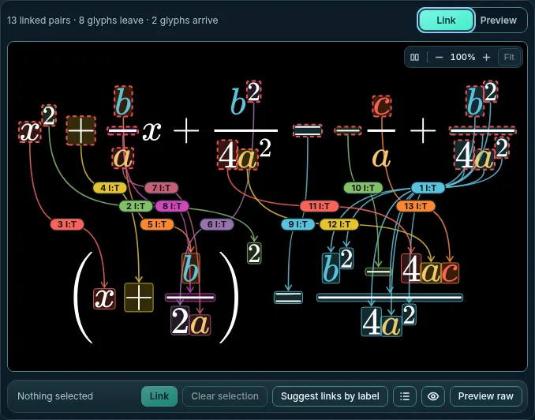
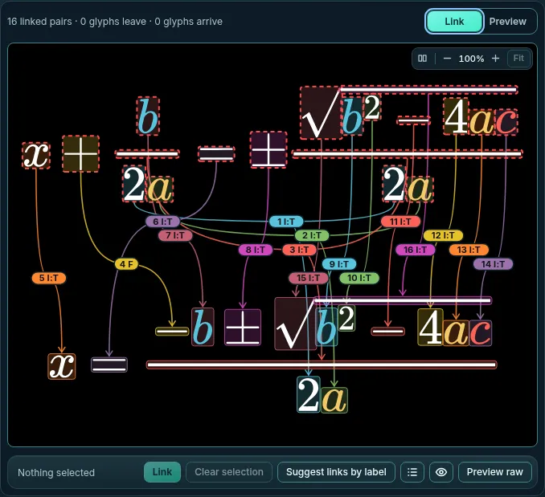
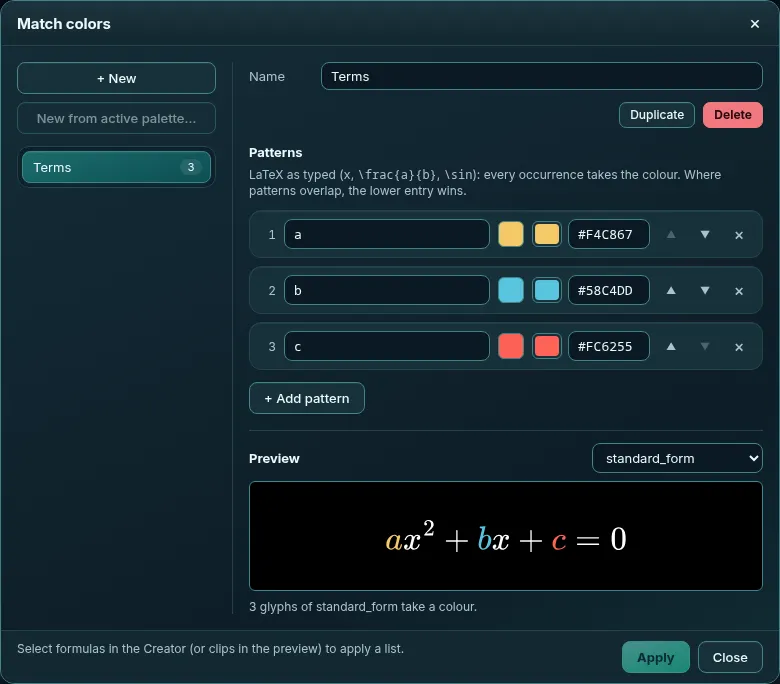

Deriving the quadratic formula
Seven formulas, six relations: the classic derivation of the quadratic formula by completing the square, glyph by glyph. You write the formulas, put them on the timeline, relate each one to the next, colour the terms, and export the Python and the video.
What you will make
A twenty-second animation in which each formula turns into the next: the a splits to divide everything, a term hops over the equals sign, new terms are written in, a block of glyphs is simplified, and two denominators become one.
This is the same scene as ManimCE renders it from the Python the editor exports:
Along the way you practise what the pages on relations explain:
- one glyph that goes to two places, and a block of six glyphs linked in one go;
- a term that crosses the equals sign along an arc, with its sign flipping by a fade;
- glyphs that no pair brings, which arrive with the intro of the next formula, and glyphs that no pair takes, which leave with the outro;
- two glyphs that merge into one;
- colours that follow the terms, set once for all the formulas with Match colors.
Before you start
You need the editor open in a browser, with a new project (File ▸ New). Name it:
click Untitled in the menu bar, type Deriving the quadratic formula and press
Enter. The scene of the export will take that name. To follow the tutorial
you do not need Manim; you need ManimCE only if you want to render the video yourself at the end.
The tutorial assumes you can write a formula and place a clip on the timeline; Writing formulas and Working with the timeline explain both, and How relations work and The relation editor are the pages this one puts to work. If you prefer to read first, download the finished project above and open it with File ▸ Open…, then Other file… in the dialog that opens (Projects explains it): you can compare your own steps with it at any time.
The plan
Each formula is written once, and each relation turns one formula into the next while the clips overlap on the timeline.
| # | Name | LaTeX | Track | Start | End |
|---|---|---|---|---|---|
| 1 | standard_form | ax^2+bx+c=0 | Track 2 | 0 | 4.1 |
| 2 | divide_by_a | x^2+\frac{b}{a}x+\frac{c}{a}=0 | Track 1 | 2.7 | 6.9 |
| 3 | move_constant | x^2+\frac{b}{a}x=-\frac{c}{a} | Track 2 | 5.3 | 9.3 |
| 4 | add_to_both_sides | x^2+\frac{b}{a}x+\frac{b^2}{4a^2}=-\frac{c}{a}+\frac{b^2}{4a^2} | Track 1 | 8.1 | 12.5 |
| 5 | complete_the_square | \left(x+\frac{b}{2a}\right)^2=\frac{b^2-4ac}{4a^2} | Track 2 | 10.5 | 15.3 |
| 6 | square_root | x+\frac{b}{2a}=\pm\frac{\sqrt{b^2-4ac}}{2a} | Track 1 | 13.7 | 18.1 |
| 7 | solution | x=\frac{-b\pm\sqrt{b^2-4ac}}{2a} | Track 2 | 16.5 | 20.6 |
The times follow one rule: a clip starts when the relation that brings it begins, and ends when the relation that takes it away ends. Consecutive clips are on different tracks, so they can overlap, and a relation can only link clips that overlap.
Step by step
1. Write the seven formulas
Press + New in the Creator. The formula editor opens on a new formula. Give it its name (1), type its LaTeX in the Raw LaTeX field (3), and press Apply (4). Do it for each row of the table. The name is what the clip shows on the timeline, and the name of the formula in the exported Python.

When all seven are in the Creator, make them the same size in one go: point at the ∑
key of the toolbar and choose Formulas in its menu to select every formula,
right-click one, choose
Edit together… and type 1.5 in Scale (1).
The same row has Match colors (2), which step 9 uses.


2. Put them on the timeline
Drag each formula from the Creator onto the timeline: the odd ones onto Track 2, the even ones onto Track 1. A clip made by a drop lasts three seconds. Select each clip and set its Start and End in the Timing tab of the Animations panel, as in the table. Give the first clip an intro too, in the same tab: Write, 1.5 seconds. The other intros and outros come from the relation editor, below.

To skip these two steps, download the project as it is at this point, with the seven formulas on the timeline and no relation yet, and open it the same way:
3. Divide by a
The first relation takes ax²+bx+c=0 to x²+(b/a)x+(c/a)=0. Hold
Shift, click the port of standard_form and then
divide_by_a: the relation editor opens on a new relation.
Link the a first. Click it in the source (glyph 0), add the two a of the denominators with Shift (glyphs 4 and 9), and press Link: one glyph goes to two places, and the a splits. Then press Suggest links by label and Accept all: the other nine pairs are glyphs that keep their label. Linking the a first matters: left to itself, Suggest would have sent it to the first denominator only.
The two fraction bars belong to no pair, so they arrive with the intro of
divide_by_a. In the Animation tab choose Write
for the intro, tick Run it up to the end of the relation window (starts with the target clip), and set
the Duration of the window to 1.4. Press
Save relation.

4. Move the constant term across the equals sign
Select divide_by_a and use the Relations tab: choose move_constant in Relate with and press Create relation…. Press Suggest links by label and Accept all: eleven of the twelve pairs come out right. The twelfth is the sign: link the second plus (glyph 7) to the minus (glyph 8), and set that pair’s style to Fade transform in the pair list, so that the plus fades into the minus instead of morphing.
In the Animation tab give the window a Path arc of
-60, so that the fraction hops over the equals sign, and a
Duration of 1.6. The 0 of the source belongs to no pair:
choose FadeOut for the outro and tick
Run it during the relation window (ends with the source clip). Save.
5. Add the same term to both sides
The new formula adds b²/4a² on each side. Make the relation as before. This time the
c over a on the right must stay put, and Suggest would send its a and its bar to
the new term on the left, which has the same labels and comes first. So link those two yourself
before you suggest: the a under the c (glyph 10) to the a under the c of
the target (glyph 17), and its bar (glyph 11) to the bar of the target (glyph 18). Then
Suggest links by label and Accept all.
The two new terms, fourteen glyphs, belong to no pair: Write for the intro,
the checkbox ticked, and a Duration of 1.2.
6. Factor the left side, simplify the right
This is the biggest relation: 13 pairs. The term b²/4a² on the right of the source
becomes the b² of the new numerator and the 4a² of the new denominator, six
glyphs on each side, in the same order. Link them as one pair.
In the target, press the key before the eye in the toolbar to show the glyph lists, and Shift+click in the list of the target the six glyphs: b and its exponent (10 and 11), the 4, the a and the exponent of the denominator (16, 17 and 18) and the fraction bar (19): the lists give each glyph the number quoted here. In the source, where the six glyphs stand apart, a box does it: drag one over the six glyphs on the right. Press Link.
A pair of six glyphs and six glyphs links the first to the first, the second to the second, and so on, as Manim does when two groups have the same size; it works here because both groups are in the same order.
Link the exponent of x² (glyph 1) to the exponent of the square (glyph 8). Then Suggest and
Accept all. Eight glyphs of the source belong to no pair and leave: choose
FadeOut for the outro and tick the checkbox. The two parentheses arrive:
Write for the intro, the checkbox ticked. Give the window
2 seconds.

7. Take the square root
The square root turns (x+b/2a)² into x+b/2a, and the right side moves under a
root. Three glyphs would be paired wrongly by label, so link them first: the exponent of the
b² in the numerator (glyph 11) to the exponent of the b² under the root (glyph 9);
the 4 of 4ac (glyph 13) to the 4 under the root (glyph 11); and the 4 of the
denominator (glyph 16) to the 2 of the new denominator (glyph 16), with the style
Fade transform, because a 4 turns into a 2 and morphing would look odd.
Then Suggest and Accept all.
Four glyphs leave (the two parentheses and two exponents): FadeOut for the
outro, ticked. Three arrive (the ± and the root with its line): Write for the
intro, ticked. The window lasts 1.6 seconds.
8. Isolate x
The last relation has no glyph that arrives or leaves. Two 2a become one, glyph by glyph:
click the 2 of b/2a (glyph 3), add the 2 of the denominator under the root
(glyph 16) with Shift, and click the 2 of the target (glyph 13):
selected sources and one click on the target link them at once, many-to-one. Do the same with the
two a (glyphs 4 and 17, to 14) and the two fraction bars (glyphs 5 and 18, to 15).
Link the plus (glyph 1) to the minus of the numerator (glyph 2) with a
Fade transform, as in step 4, then Suggest and Accept all. Give the window
1.6 seconds and save.

9. Colour the terms
Colouring the a, b and c of seven formulas by hand would be slow. A list of
Match colors does it in one go. Choose
Edit ▸ Match colors ▸ Create match colors…, the dialog opens on a
new list: name it Terms, and press + Add pattern three times: the
patterns a, b and c, with the colours #F4C867 (gold),
#58C4DD (blue) and #FC6255 (red). A colour is typed as hex, or picked
from the chip beside it.

Select the seven formulas with Formulas in the menu of the ∑ key, right-click one and choose Apply match colors ▸ Terms. Every a, b and c takes its colour, and it is one undo step. The colours travel with the glyphs: each glyph changes its colour along its way from the source to the target.
10. Look at it as a whole
Select the last clip and press All related… in its Relations tab: the whole derivation appears as one chain, with every relation as an arrow. Click an arrow to select its relation, and play the scene from the start in the Preview to see the six steps in a row.
The six relations at a glance:
| Relation | Pairs | Window | Path arc | Leave (outro) | Arrive (intro) |
|---|---|---|---|---|---|
| 1 → 2 | 10 | 2.7–4.1 s | 0° | none | 2 bars |
| 2 → 3 | 12 | 5.3–6.9 s | −60° | the 0 | none |
| 3 → 4 | 12 | 8.1–9.3 s | 0° | none | 14 glyphs |
| 4 → 5 | 13 | 10.5–12.5 s | 0° | 8 glyphs | 2 parentheses |
| 5 → 6 | 16 | 13.7–15.3 s | 0° | 4 glyphs | 3 glyphs |
| 6 → 7 | 16 | 16.5–18.1 s | 0° | none | none |
11. Export
Choose Export ▸ Python — ManimCE… for the scene as a Python file, or Export ▸ Video… to render a video in the browser. The first lines of the file tell you how to render it:
manim -r 1920,1080 --fps 60 DerivingTheQuadraticFormula.py DerivingTheQuadraticFormulaThe result
This is the Python the editor exports for the finished project, for ManimCE and for ManimGL. Each
relation is one self.play(…) with an animation for every pair, and the glyphs that belong
to no pair leave and arrive in the same call.
The page The generated Python explains how to run it and what its parts do.
Try changing it
- Give relation 4 a Path arc of 30° and watch the right side swing.
- Give the pair of the exponent the style Copy (source stays): the exponent of x² stays, and a copy goes to the square.
- Lengthen the window of relation 3 and choose Unwrite and Write for the unpaired glyphs.
- Change the colours in the Terms list and apply it again.
When you want to go further, Transformation recipes has more moves of algebra, and Custom paths shows how to draw the path of a glyph by hand.